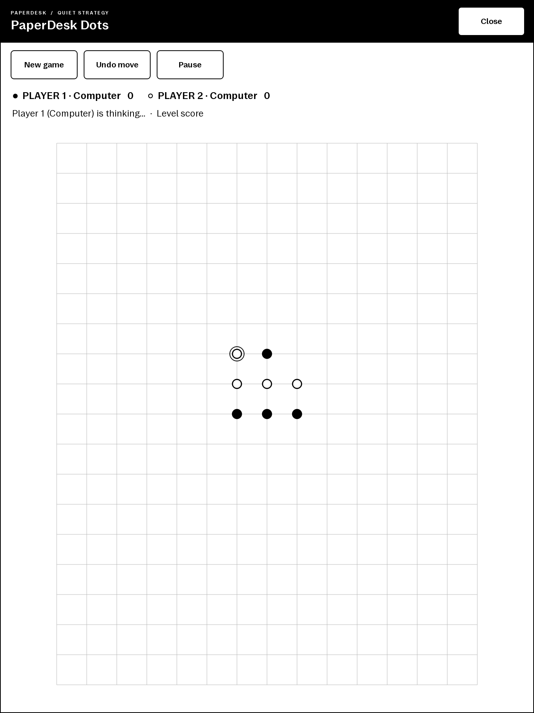

PAPERDESK 4.1.0
Paper Sketch · Six material controls
More ways to
shape a mark.
Tilt · Pressure · Paper · Wear
Finger blending · Two erasers
Free community software · Source on GitHub
Dry-media simulation · Eight apps for reMarkable 2

Actual tablet capture · Dots